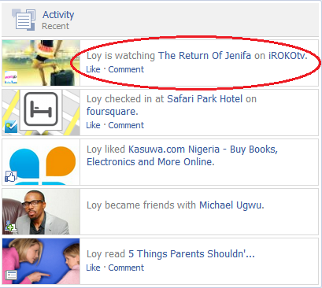

Obtenção de dados do Facebook
Gabriel Pugliese - @gabrielsapo
nUSP: 5639061
Paulo Cheadi Haddad Filho - @paulochf
nUSP: 5210744
Gabriel Pugliese - @gabrielsapo
nUSP: 5639061
Paulo Cheadi Haddad Filho - @paulochf
nUSP: 5210744

"The Open Graph protocol enables any web page to become a rich object in a social graph. For instance, this is used on Facebook to allow any web page to have the same functionality as any other object on Facebook."
Propriedades de meta tags básicas:
developers.facebook.com/tools/debug
meta property="og:url" content="http://socialattend.com/" meta property="og:title" content="Social Attend" meta property="og:description" content="Procure eventos da sua área de atuação e conecte-se com pessoas em comum através das redes sociais!"
É possivel tornar uma página qualquer em um objeto comum dentro do "grafo social" utilizando a propriedade og:type. Exemplo:
meta property="og:type" content="video.movie"
É necessário cadastrar um aplicativo dentro da página de Apps do Facebook para desenvolver algo. Até mesmo para fazer uma página com um botão de "Entrar com o Facebook".
Após a criação de um aplicativo, é possível:
Antes de começar as mexer em código, é possível utilizar o console para desenvolvedores do próprio Facebook:
developers.facebook.com/tools/explorer
Todas as consultas de usuários são restritas por permissões dadas para sua aplicação, exceto informações públicas.
Utilizando o Graph API, podemos obter resultados de duas maneiras:
Obtendo dados públicos de um usuário:
GET https://graph.facebook.com/gabrielsapo
Obtendo dados públicos de uma página:
GET https://graph.facebook.com/http://socialattend.com/
É necessário obter uma chave de acesso (OAuth2.0) para fazer requisições através de FQLs. Portanto, não é possível obter informações públicas sem autenticação por este método.
GET https://graph.facebook.com/?fql=SELECT%20uid%2C%20name %20FROM%20user%20WHERE%20uid%20%3D%me()
Que pode ser traduzido no API Explorer para:
SELECT uid, name FROM user WHERE uid = me()